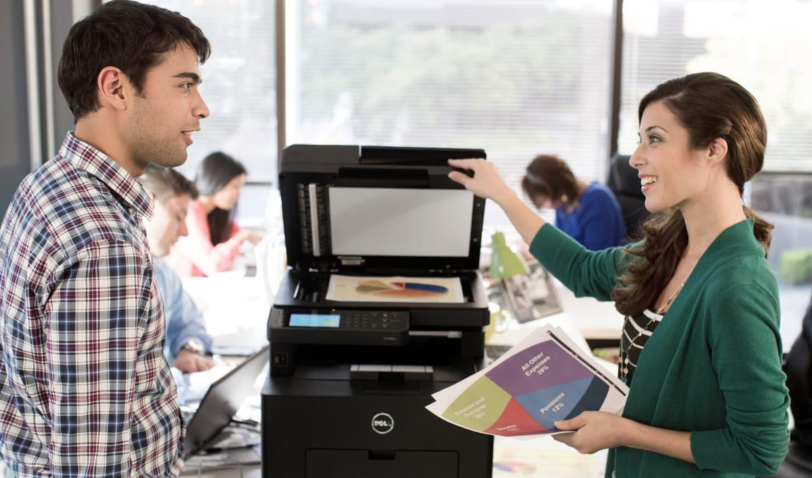
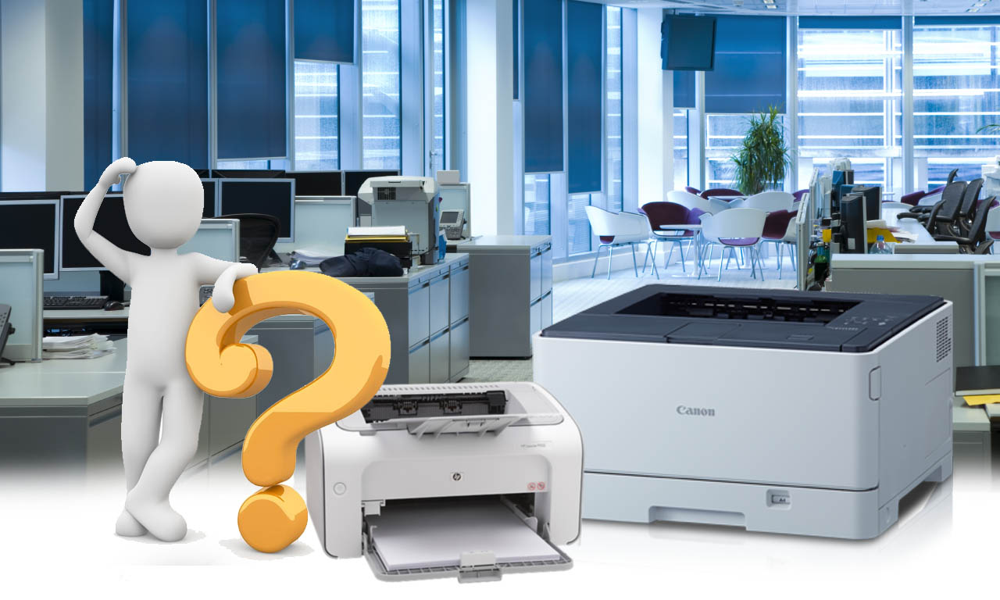
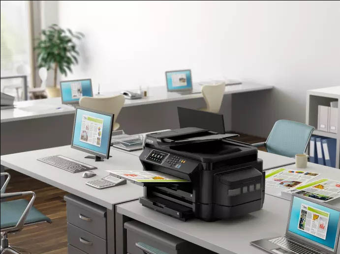
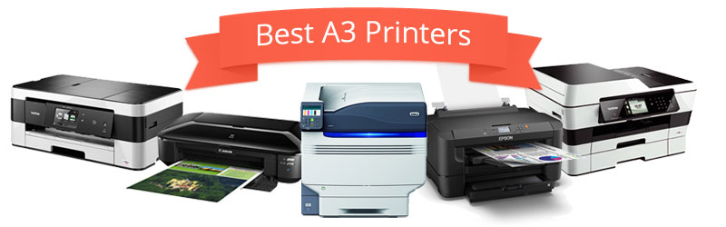
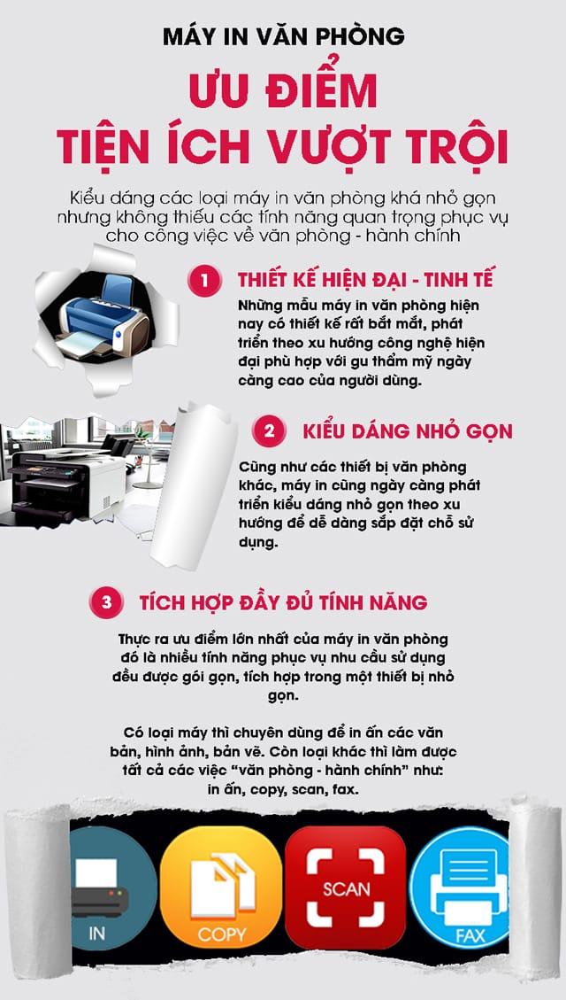

Lựa chọn máy in … A4 Hay A3 ?
Lựa chọn máy in … A4 Hay A3 ?
Bạn đang cần mua một máy in mới? Nếu câu trả lời là có, rất có thể là bạn đang xem xét loại khổ giấy in A4. Tuy nhiên, đôi khi những điều tốt nhất không phải lúc nào cũng có trong máy in nhỏ …

Tôi đoán rằng đa số khách hàng không xem xét đến việc mua một máy in A3 khi mua sắm cho doanh nghiệp hay tại nhà. Họ nghĩ rằng nó quá lớn so với nhu cầu thực? Có lẽ thế, nhưng đó là một quan niệm sai lầm khi cho rằng máy in A3 chỉ được áp dụng cho doanh nghiệp sử dụng. Từ đó, họ có thể tự hào về một số lợi thế mà bạn không nhận được với các dòng máy khổ A4, đó là lý do tại sao chúng tôi ở đây để giúp bạn xác định và sử dụng các lợi ích tuyệt vời của dòng máy A3.
A3 hay không A3? Đó là một câu hỏi…

Khi nói đến máy in A3, kích thước không phải là tất cả mọi thứ. Chúng có thể có kích thước lớn hơn các dòng khổ A4, chúng có thể in các khổ giấy lớn hơn A4, nhưng đó không phải là tất cả những gì những máy in A3 có thể cung cấp.
Dưới đây là những điểm nổi bật của dòng A3 so với A4:
- Máy in A3 có động cơ mạnh mẽ hơn, điều này có nghĩa là công suất in hàng tháng của nó lớn hơn nhiều
- Máy in A3 có thể tăng tốc độ in A4 của bạn nhanh hơn so với máy in A4 thông thường rất nhiều lần
- Hộp mực với số lượng trang in khổng lồ. Do khả năng in các tài liệu lớn hơn nên máy in A3 sử dụng mực in với dung lượng lớn hơn. Điều này có nghĩa là bạn không cần thay thế mực thường xuyên hơn và do đó không chỉ giảm thời gian chết, chúng còn giảm thiểu được chi phí phí mực in và bảo trì.
- Hơn nữa, sở hữu một máy in A3 bạn có thể xử lý nhiều công việc hơn vì chúng được thiết kế để đối phó với các nhiệm vụ nặng nề hơn.

Một số dòng máy in A3 được thiết kế chủ yếu để in ảnh. Vì vậy, nếu bạn muốn tạo ra các bản in lớn để sử dụng tại nhà, hoặc có thể là các tài liệu lớn hơn để sử dụng chuyên nghiệp hơn, thì máy in A3 có thể chỉ là lựa chọn thắng cuộc. Hơn nữa, giống như máy in A4, bạn có thể tìm thấy tất cả các dòng máy có tính năng phù hợp với nhu cầu riêng.
Bạn có thể tìm thấy những mẫu máy A3 đắt tiền hơn phù hợp hơn để sử dụng chuyên nghiệp hoặc những dòng máy giá cực kì cạnh tranh nhưng lại đáp ứng được tốt yêu cầu của bạn. Bạn có rất nhiều sự lựa chon khi đang tìm kiếm một chiếc máy in mới. Hãy liên hệ với Toàn Nhân, chúng tôi sẽ giúp bạn tìm thấy những gì bạn cần và giúp bạn biết đến nhiều loại máy in A3 đang được chào bán với giá cực kỳ hấp dẫn. Với tốc độ in lớn hơn, mạnh mẽ hơn và công suất kéo dài hơn, một mô hình A3 có thể là giải pháp bạn đang tìm kiếm. Đôi khi lựa chọn tốt nhất không phải là hiển nhiên nhất …

Hãy xem thêm tất cả các loại máy in A3 hoặc liên hệ trực tiếp để nhân được tư vấn chính xác nhất theo yêu cầu của bạn nhé!
Máy in văn phòng là loại máy in chuyên dùng để in ấn cho gia đình, văn phòng vừa và nhỏ. Ngoài ra, các loại máy này còn sở hữu những chức năng copy, scan, fax tài liệu, văn bản và hình ảnh phục vụ tối đa các nhu cầu học tập, công việc. Đồng thời, đúng với tên gọi “máy văn phòng” nên các thiết bị đa phần có thiết kế hiện đại, kiểu dáng nhỏ gọn dễ dàng sắp đặt trên các bàn làm việc hoặc bất cứ đâu trong nhà, trong công ty để thuận tiện sử dụng.
Ưu điểm các loại máy in văn phòng:

– Thiết kế hiện đại – tinh tế: Những mẫu máy in văn phòng hiện nay có thiết kế rất bắt mắt, phát triển theo xu hướng công nghệ hiện đại phù hợp với gu thẩm mỹ ngày càng cao của người dùng.
– Kiểu dáng nhỏ gọn: Cũng như các thiết bị văn phòng khác, máy in cũng ngày càng phát triển kiểu dáng nhỏ gọn theo xu hướng để dễ dàng sắp đặt chỗ sử dụng.
– Tích hợp đầy đủ tính năng:Thực ra ưu điểm lớn nhất của máy in văn phòng đó là những tính năng phục vụ nhu cầu sử dụng đều được gói gọn, tích hợp trong một thiết bị nhỏ gọn. Có loại máy thì chuyên dùng để in ấn các văn bản, hình ảnh, bản vẽ. Còn loại kia thì làm được tất cả các việc “văn phòng – hành chính” như: In ấn, copy, scan, fax.
Có những loại máy in văn phòng nào?
Thời điểm hiện tại máy in văn phòng có những loại như:
– Máy in kim: Mục đích sử dụng in ấn những chứng từ có nhiều liên ví dụ như hóa đơn, phiếu thu, ….
– Máy in đơn năng: Loại máy chỉ chuyên in ấn.
– Máy in đa năng: Ngoài chức năng chính là in ấn, loại máy này còn có công dụng tích hợp thêm những chức năng hỗ trợ cho công việc thường xuyên trong văn phòng như: Copy, scan và fax dữ liệu, văn bản.
– Máy in laser đen trắng – lazer màu: Chuyên in ấn văn bản, tài liệu.
– Máy in phun màu: Chuyên in hình ảnh, bản vẽ những ấn phẩm quảng cáo như tờ rơi, catalog, brochure, …
– Máy in khổ giấy A3: Đây là dòng máy in chuyên dụng, chuyên in báo cáo khổ lớn, bản vẽ, thiết kế…
Trên là những thông tin của các loại máy in văn phòng phục vụ cho rất nhiều mục đích sử dụng của người dùng. Để chọn được loại máy phù hợp nhất nhằm tiết kiệm chi phí và thuận tiện nhất cho việc sử dụng thì bạn có thể xem thêm bài viết: “Hướng dẫn chọn mua máy in” tại trang tin tức đễ hiểu rõ hơn.
Những tính năng hay khác của máy in văn phòng có thể bạn chưa biết?
Ngoài các tính năng chính ở trên, các hãng máy in còn tích hợp thêm một số tính năng nhằm hỗ trợ sâu hơn cho nhu cầu của người dùng như:
– In 2 mặt tự động: Chuyên dùng cho nhu cầu in 2 mặt giấy một cách chuẩn xác và để tiết kiệm giấy, chi phí.
– Copy, scan, fax 2 mặt tự động: Giúp người dùng xử lý những tài liệu 2 mặt nhanh gọn đáng kể, đạt hiệu quả cao hơn trong công việc.
– In qua mạng (LAN – Wifi): Phù hợp mục đích sử dụng cho nhiều người dùng chung một máy như trong các văn phòng công ty, cửa hàng.
– In mobile: In ấn được mọi lúc mọi nơi và ngay cả khi bạn đang di chuyển.
– Sử dụng hệ thống mực liên tục: Được thiết kế dành cho các dòng máy in phun. Dù chất lượng bản in ấn chỉ đạt 7-8 điểm trên thang điểm 10 so với mực in rời nhưng chất lượng in vẫn đủ dùng và tuyệt hơn nữa lả giúp giảm chi phí rất đáng kể.
=>> Sản phẩm nổi bật: Máy in canon
Cần nạp mực hoặc sửa máy in tận nơi? Mực In Trường Phát có mặt trong 30 phút tại TP.HCM — in test trước khi tính tiền, bảo hành 1 tháng.
0908.327.123 · 0819.007.394 (Zalo cả 2 số)